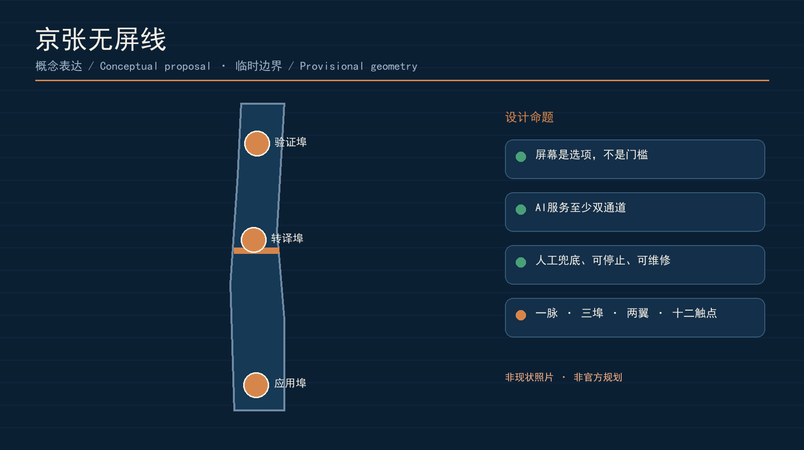
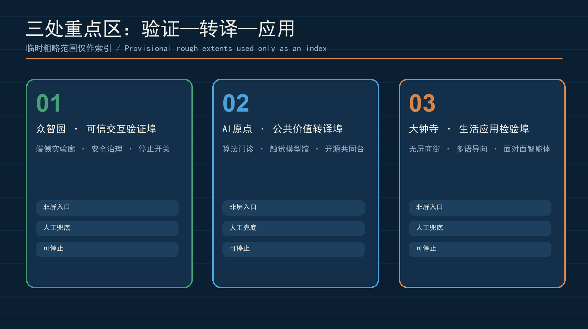
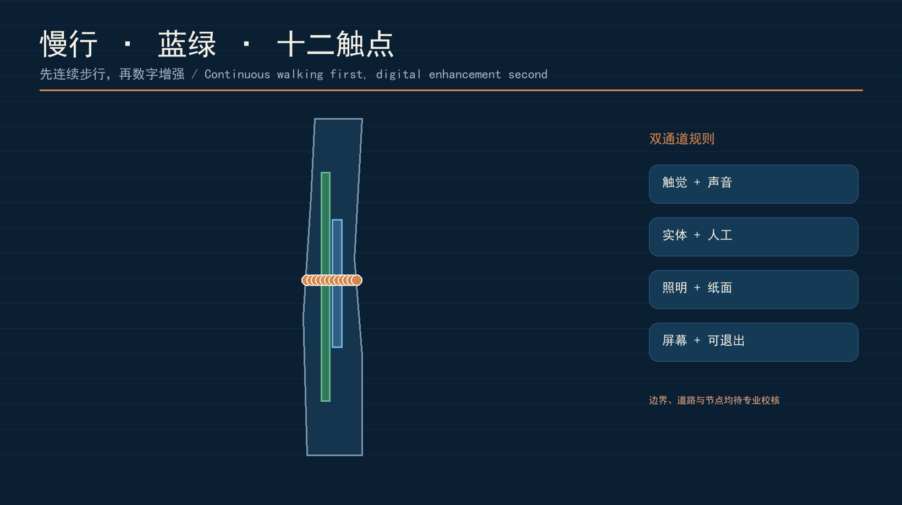
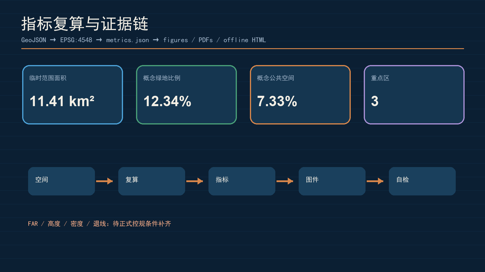

本页面使用仓库提供的临时粗略边界。它不是法定红线、权属或审批依据；官方几何发布后需全包重算。
审阅索引
总览地图
三层范围
重点区域
用地分区
交通慢行
蓝绿公共空间
建筑
更新项目
AI 场景
任务覆盖
自检状态：待本地四道门复核
来源与假设
核心指标
11.41 km²临时总体范围
12.34%概念绿地比例
7.33%概念公共空间比例
3验证 · 转译 · 应用三埠

三处重点区
众智园：可信交互验证埠
端侧模型、低功耗信标、安全评测和模型停止开关。
AI原点：公共价值转译埠
算法门诊、触觉模型馆、开源共同台和居民质询。
大钟寺：生活应用检验埠
无屏商街、多语导向、实体授权和面对面智能体服务。

公共服务协议
非屏入口
人工兜底
最小数据
可停止与可维修

十二场景与三类测试
- 触觉换乘链
- 定向音频
- 人工/AI共同台
- 无账号问路
- 儿童可触摸模型
- 老人实体令牌
- 轮椅路线提示
- 商户多语助手
- 雨洪声音解说
- 开发者演示桌
- 模型停用申诉台
- 无屏城市周
测试：无屏导航压力测试、最小感知沙盒、人工接管演练。

资料、假设与自检
边界与三处重点区为临时约束；容积率、高度、密度、退线、道路红线、市政容量、权属、文保与工程条件均待正式资料和专业校核。方案文件通过结构化来源、指标、合规、标准和设计深度矩阵保持可审计。